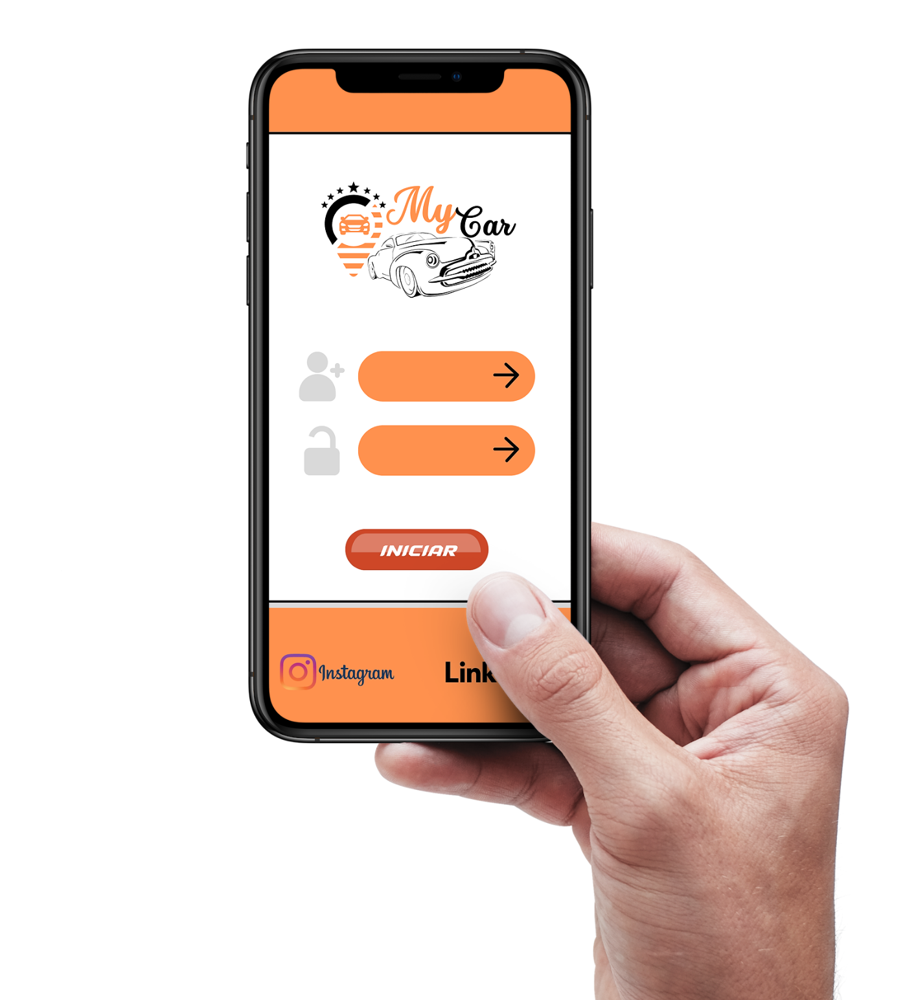
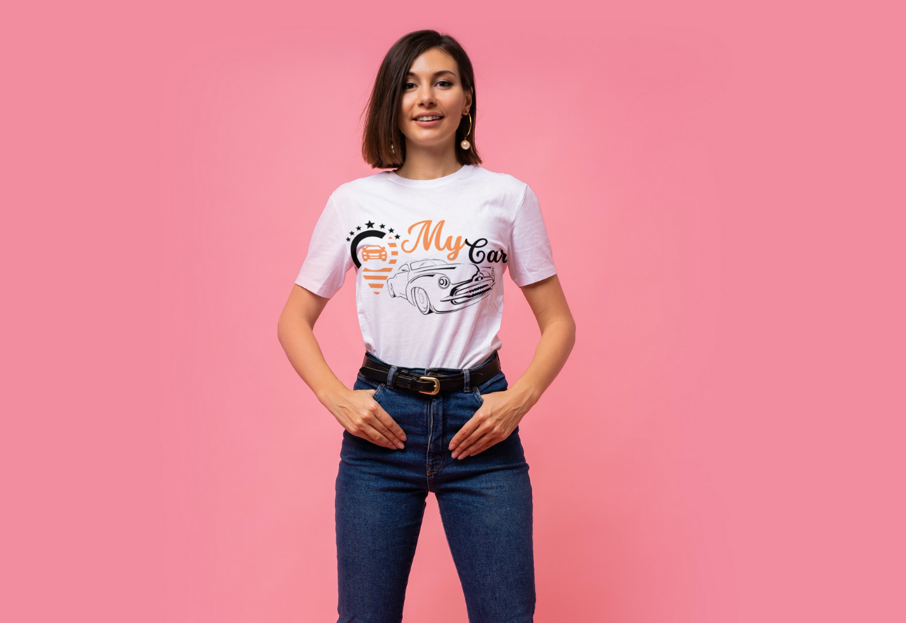
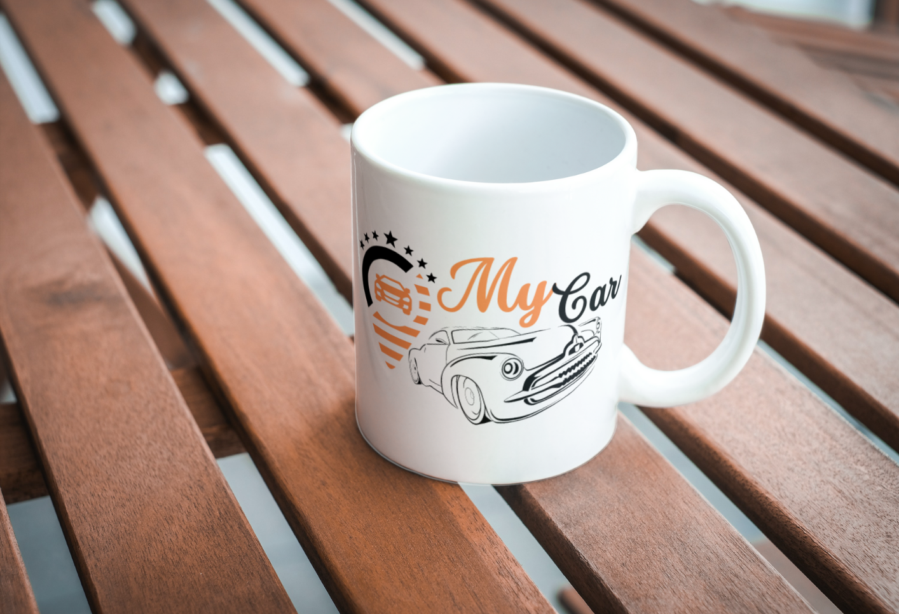

Apresentação
O automóvel foi e será, por muito tempo, um dos bens mais desejados pelas pessoas. Contudo com a
aquisição deste bem, por consequência, surgem uma série de demandas no que diz respeito a sua
manutenção, tanto preventiva, quanto reparadora.
O software idealizado e apresentado pela empresa GBM Company Info. Tec., busca trazer mais
comodidade na relação entre profissionais ligados a manutenção, reparação, restauração etc., e
os proprietários de automóveis.
Com uma interface simples e intuitiva o software permitirá que o(s) usuário(s), tenham um
acompanhamento mais fidedigno do histórico de manutenções realizadas e podendo até ter um
relatório da situação atual do veículo.
No decorrer da apresentação serão salientados mais detalhes do software MyCar, seu
novo aliado no cuidado com a “saúde” do seu carro.
Briefing do projeto
O sistema que será desenvolvido objetivará a apresentação de um layout simples, moderno e
intuitivo. Com a aplicação de cores neutras o design seguirá um visual moderno permitindo uma
fácil usabilidade.
Telas de cadastros iniciais com solicitação de informações, simplificadas, farão parte da
abertura do sistema. Nesses espaços os usuários farão um pré-cadastro, para apenas entrar na
plataforma e familiarizar-se. Posteriormente, com o interesse em se aprofundar na ferramenta os
usuários deverão completar os seus dados de acordo com o tipo de acesso e objetivo.
Cada tipo de usuário terá a sua disposição, telas específicas para inserção de informações, mas
todos poderão estar em constante interação com os demais usuários, ou seja, existirá o ambiente
de edição e o ambiente de interação.
A interação será uma das chaves do projeto, pois serviços poderão ser oferecidos, assim como,
descontos e promoções por parte dos profissionais. Já o proprietário do veículo terá uma
visualização mais ampla dos profissionais à disposição (pelo filtro distância, por exemplo),
além de ter recomendações, facilidade de agendamentos entre outras ferramentas.
Já pensou poder ter na palma da mão uma plataforma que permita acompanhar a saúde do seu
veículo? Com o MyCar essa possibilidade se descortina.
Usuários
O software MyCar contará com uma interface simples, integrando 2 (dois) tipos de usuários:
Empreendedor e Cliente.
O usuário Empreendedor terá acesso as funcionalidades direcionadas a prestação de serviços,
podendo escolher os mesmos em uma listagem pré-determinada, aplicando valores e eventuais
descontos.
O usuário Cliente terá acesso as funcionalidades direcionadas ao(s) veículo(s) cadastrado(s).
Neste espaço poderão ser cadastrados um ou mais veículos, onde, logo após, será mostrada uma
listagem de prestadores de serviços de acordo com o tipo de filtro escolhido (Proximidade,
Estrelas, Desconto etc.).
Cada Cliente poderá avaliar o Empreendedor, de acordo com o serviço prestado, atribuindo
Estrelas (de 1 a 5).
Necessidades observadas e regras de negócio
A maioria das pessoas passam por dificuldades na hora de procurar um especialista para cuidar da
saúde do carro. Como saber se possuí boas referências? Quais prestadores de serviços estão mais
próximos? Quais serviços oferecem? Entre outras dúvidas que surgem.
Assim, buscando facilitar está busca o software MyCar permitirá uma maior interação
entre o(s) profissional(is) e os proprietários de veículos.
O usuário Empreendedor poderá gerenciar sua própria lista de clientes, enviando promoções e
descontos especiais, além de lembretes para revisões, com base nas datas de revisões
anteriores.
No caso dos proprietários dos veículos, será possível após o cadastro de um veículo, receber
alertas de promoções e indicações das oficinas e prestadores de serviços mais próximos ou de
acordo com o tipo de filtro escolhido.
Logo após efetivar um serviço o usuário Cliente poderá fazer uma avaliação (de 0 a 5), isso,
contribuirá com o ranqueamento do prestador de serviço fazendo que este seja destacado no
sistema. O Cliente também terá acesso a uma planilha de atualização da “saúde” do veículo, onde
poderá fazer a programação para os próximos serviços e acompanhar as datas para manutenção
preventiva (ex. troca de fluidos, troca de pneus, higienização de ar-condicionado entre
outros).
Será um ambiente moderno para a comunicação, possibilitando envio de orçamentos a partir de
tabelas contidas no sistema, envio de fotos, mensagens e a possibilidade de fazer o pagamento
pelo serviço dendro do próprio sistema.
Branding - identidade da marca
O MyCar será um novo aliado na manutenção veicular.
Em breve o sistema estará disponível para acesso e realização de cadastros. Assim como, poderá
proporcionar a interação que faltava para convergir na aplicação das melhores práticas na
prestação de serviços automotivos.


Teste de Projeto
Entre em contato!
Em caso de dúvidas entre em contato conosco através do formulário abaixo.
⚠ Obs.: O sistema aqui apresentado está em fase de desenvolvimento, assim,
o material contido neste portfólio é apenas conceitual e visa demostrar as habilidades e
conhecimentos de programação em HTML, CSS e JavaScript.
© Direitos de propriedade reservados a Girlei Both de Matos.
CÓDIGO
Clique no botão abaixo e visualize o repositório no GitHub.